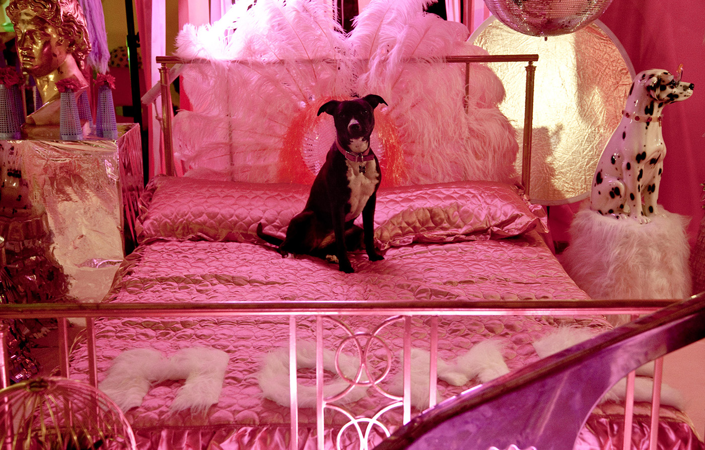

Work Home Out, November 2013
This project was a collaboration with James Barnett and Poppy French. Together we created an immersive and sculptural installation in the Rose Lipman Building in Haggerston. The project's starting point was James and Poppy's extensive and mundane photography collection, which we responded to by creating three zones in the space: work, home, and out. As part of the installation visitors were invited to interact with these three zones, using the disposable cameras provided to create 'instant nostalgia'. This project was supported by Slashstroke Magazine and The Mill Co project and was in association with Create London and Go Visual Ltd.
View more images from the project